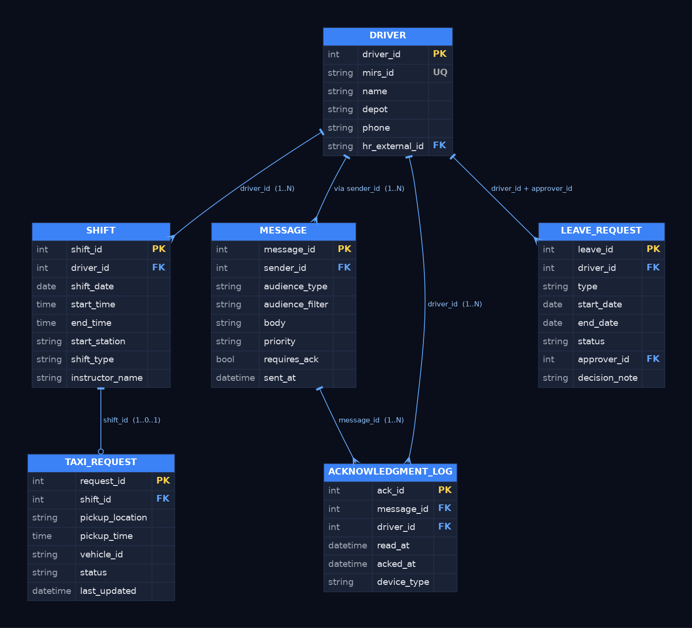

Six entities and five relationships that serve the Portal's three core flows: work schedule, operational messaging, and leave requests. Every entity derives from a concrete functional requirement in the BRD.
The Portal interfaces with existing systems in the organization (Scheduling, HR, Dispatch) and holds only the data required for its own flows. The diagram shows entities and relationships at the conceptual level.

SHIFT.driver_id points to DRIVER.driver_id, TAXI_REQUEST.shift_id points to SHIFT.shift_id. This ensures every reader knows which link they're looking at, without ambiguity.
MESSAGE.sender_id → DRIVER in the role of sender (not recipient — those go via ACKNOWLEDGMENT_LOG)LEAVE_REQUEST.approver_id → DRIVER in the role of approver (alongside driver_id who is the requester; two rows from the same table to the same target, impossible to identify without role names).Driver profile: name, employee number (MIRS), depot, phone, and an external link to the HR System. Every flow in the system starts with driver identification. The hr_external_id is the FK to the HR System of Record — we don't hold leave balance or payslips in the Portal, only the key.
The daily schedule — each driver can have only one shift per day (UNIQUE on driver+date). The shift_type field handles values: morning, afternoon, night, leave, on-call, standby. instructor_name is populated only for training shifts — keeping the field at the SHIFT level (and not a separate table) is correct because it's shift-dependent, not driver-dependent.
Not every shift requires a ride. Separating into its own entity lets us update the request's status (created, vehicle assigned, en route, arrived, cancelled) without touching the shift record — important because the shift is an operationally stable record, while the request changes frequently.
A single message can be sent to an audience — a specific line, a depot, or all active drivers. audience_filter is stored as a query, not a list — so the audience is recomputed each time (e.g., if a driver is added to a line after the message was sent). requires_ack marks safety messages that require explicit read acknowledgment.
This is where I turned an N:M relationship between message and drivers into its own table. Each message goes to a group, and every driver in the group needs to acknowledge it individually. Extracting the log into a separate table lets us know who read, when, and on which device — data required for regulatory compliance (BRD Section 8 — privacy) and for incident investigation if needed.
Each request is preserved from submission to decision — including negative decisions with reasoning. approver_id links to DRIVER (a manager is also a driver in this model — saves a separate USER table). decision_note is required if status = "denied" — a business rule documented at the DB level, not just the UI.